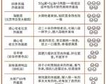
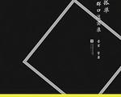
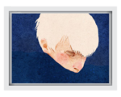
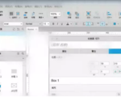

这里的时光很慢很慢，没有车和马，一生只够活成一幅画的模样。 这里的时光很快很快，气候变化，晴雨无常，一日领略四季变幻。 如果世上真有童话，那它一定就在这里 我在微博上看到这个...
-
世间若有童话，一定就在这里
-
捷克•布拉格｜童话里都是骗人的，但布拉格的美不是！
第一次知道布拉格这个名字，是源自蔡依林的那首《布拉格广场》。高中时代的我，犹如一个土包子，对这个世界没什么认知，也压根不知道在这个世界上，还有一个叫布拉格的地方。据说，它美的...
-
文艺台北，爱上你只需眨眼之间
都说台北是个充满人文魅力的城市 想触及这座城市的灵魂 就跟着我走吧！ 早上 不止可远观——总统府 推荐指数：⭐⭐⭐ 关于它你该知道的事 台北总统府一直是中国台湾地区的最高权力...
-
为何黑白照片那么具有吸引力？
有一句话是这么说的，“逼格不够，黑白来凑”，那么为何我们对黑白有一种特别的感觉呢，它真的是那么有逼格吗？ 我个人总结归纳了如下几点，排名不分先后。 新鲜感 我们人类从出生起，...
-
不要以为「背带裤」只能穿出一种风格|鳗言穿搭的第32天
早上好 :) 今天要分享的是怎样把背带裤搭出不同感觉。 提起背带裤，便会不自觉地联想到经典游戏人物超级玛丽。这个身着背带裤，靠吃蘑菇长大的小人。 他的发明者宫本茂在采访中说，...
-
老蘭画说嘚啵嘚:不怕你变老，只怕你老的不够优雅
老并不可怕，可怕的是你老的不够优雅。 我是小六，就是那个一二三四五六七八九十的那个小六。 于谦有三大爱好：抽烟喝酒烫头；老蘭也有三大爱好：喝茶抽烟看美女码字。
-

有了这碗炸酱面，我就能在北京好好生活
这季节，到北京不吃炸酱面，简直暴殄天物。呼噜一口炸酱面，咔嚓一口生黄瓜，在大热天里吃来，尤其痛快。 但老北京其实很少在外吃炸酱面，对于他们来说，最地道的，永远是“家里那一口儿...
-
写作一年，我活成了身边人的励志典范
文/怀左同学 01 到今天，我写作已经整整一年了，早上收到读者留言：“小姐姐，很喜欢你的文章，后悔这么晚遇到你，但我会把你之前的所有文章看完的。” 莫名感动，被无数次当成小姐...
-
爱坐电梯的Puppy
上下班时，总能遇到一条狗狗，在电梯口或是电梯里。不知道它姓甚名谁，索性唤作Puppy。 第一次见到它是在电梯口，电梯门打开的瞬间，小家伙一溜烟冲了进去，简直太逗了！没有主人的...
-
故事| 去仙本那拜访“海上精灵”巴瑶族
出发之前，我对于仙本那的认知只停留在以下这三点： 1、这里是潜水者的天堂，可以考取潜水证； 2、这里有传说中的”海上吉普赛人“——巴瑶族 3、这里去年有中国人被绑架向政府要赎...
-
「每一个毛孔都在呼吸」|| 我在Sequoia红巨衫国家公园跑过的山路
"In the mountain, stillness surges up to explore its own height In the lake,movement st...
-
张老二的天塌了
我正在洗澡，突然听到一声巨响，第一感觉是爆炸了。来不及擦身上的水，穿着裤头就跑出去了。 张老二家已经围满了人，厨房还冒着烟。人们站在他家的大门口不进去，议论纷纷的。 煤气爆炸...
-
阿朗的鸽子
阿朗睡在石楼顶鸽房最高的那根房梁上，懒散地翘动着尾巴，睨着翻飞争食的鸽子，阳光被它们扑朔的翅膀拍碎，跟着羽毛一起下坠，落在阿朗的眼皮上，阿朗的眼皮越来越沉，昏昏睡去。...
-
露兰春：惊鸿一瞥，浮生若梦
露兰春，好香艳的名字。 人如其名，舞台上的她，莲步轻摇，行走间香风细细；水袖缓搭，颦笑间艳若桃李。露兰春不仅扮相潇洒俊美、妩媚丛生，戏曲的功底也是唱绝四座、名满天下。 她像庭...
-
七八十年代流行西漂 |这里是东方好莱坞
如果你问别人知道西影制片厂吗，他一定一副丈二和尚摸不着头脑的反问你。 当你再问他看过《霸王别姬》《老井》《图雅的婚事》《红高粱》《大话西游》吗，他骨碌着圆滚滚的眼珠，故作...
-
摄影&生活家|两支笔一快门，我的生活美学
两支笔，一快门，爱生活美学，长葆欢喜心。 这是我在简书上的定位与签名，算是我努力的方向。 若真能将人生极简到这一句话里，我该是多么幸运和幸福——对纷纭世界始终保持欢喜之心，始...
-

宏大时代的别样注解——《五十四种孤单》读后
副标题：中国孤宿人群口述实录作者：普玄等出版社：江苏凤凰文艺出版社出版年：2017年4月 打开《五十四种孤单——中国孤宿人群口述实录》这本书之前，我想当然地想象了一下它的套路...
-
「真实短篇故事」网赚兼职，是网络世界里的传销？
 菌魇 昨天 20:56
菌魇 昨天 20:5601. “您好，我们这里是天王盖地虎网赚平台，您是要咨询网赚吗？” “嗯，听说我同学说你们这里一天赚一千没问题啊？！” 中午，有生吞活剥之势的阳光冲进窗户，窗户形同虚设的竖在...
-

江湖未定，你我皆是黑马
PART ONE 说到写作，我曾这样幻想过:只要我一出手，随手一写就能成为大家。我，就是下一匹黑马。阻拦我的从来不是能力差异，而是我想与不想一个念头而已。 等我真正静下心开始...
-

产品经理应该看什么书？
好吧，又要写一个非常大的话题，之所以想写这篇文章也是因为最近有朋友咨询，让我推荐一些关于产品的书，我这个人属于慢热型的，一时半会还真太想不出来。还有一个原因就是因为咨询我的大...